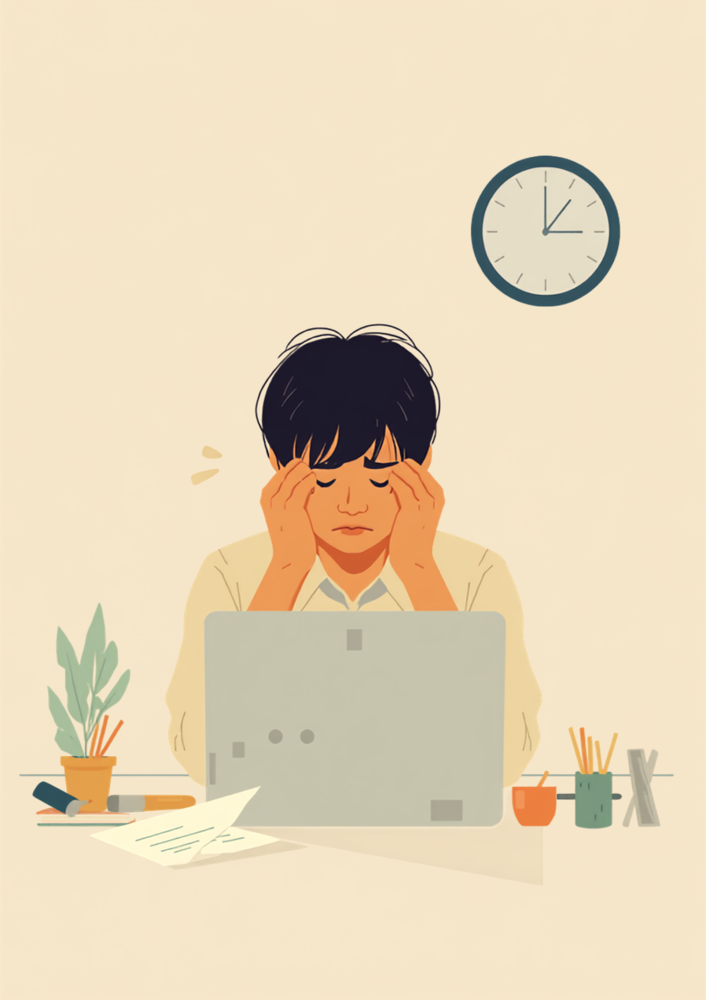
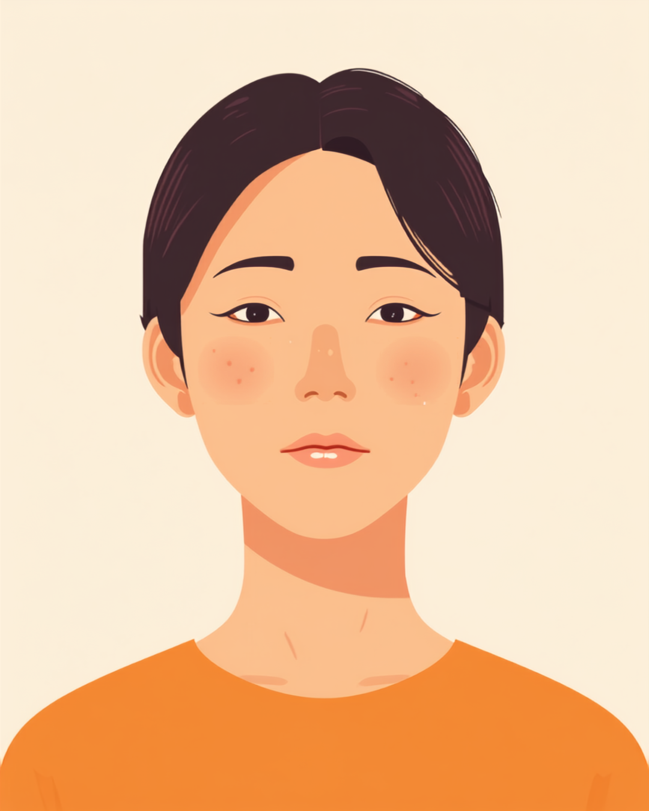

「まだ大丈夫」と思っているうちに、締め切りが目の前に来ている
就労支援の現場で関わってきた中で、先延ばしに悩むADHDのある方から繰り返し聞いてきた言葉があります。「やらなきゃいけないのは分かってるんです。分かってるのに、体が動かないんです」というものです。頭の中では締め切りのことをずっと気にしているのに、実際に手を動かし始めるのは決まって前日の夜か、当日の朝になってから。そのたびに「また今日もギリギリだ」と自分を責めながら、周りにもそう思われているんじゃないかという不安を抱えている方が多いようです。
厄介なのは、締め切りに間に合わせること自体はできてしまう場合があることです。徹夜同然で仕上げて、なんとか提出には漕ぎ着ける。だから傍目には「結局いつも通り終わらせている人」に見えて、本人の中にある「毎回綱渡りをしている恐怖」は伝わりにくいという声もあります。
「正直言うと、締め切りの1週間前に上司から『早めにやっておいてね』って言われた瞬間は『はい、やります』って本気で思ってるんです。でも次の日になると、なぜか他の細かい作業から手をつけちゃって、気づいたら3日過ぎてる。半年前にも同じことをやって始末書みたいな始末書じゃないですけど始末書っぽいものを書かされたのに、また同じパターンにはまってる自分に、正直うんざりしてます。」

なぜ先延ばしが起きるのか、気合いや性格の問題ではない理由
ADHDの先延ばしには、脳の実行機能と呼ばれる働きの特性が関わっているとされています。実行機能とは、計画を立てたり、優先順位をつけたり、作業を始めるきっかけを自分で作ったりする働きのことです。この働きが定型発達の人とは異なる形で作用するため、「頭では分かっているのに、最初の一歩が出ない」という状態が起きやすいと考えられています。
加えて、ADHDのある人は時間の感じ方そのものが独特だという指摘もあります。「締め切りまであと3日」という情報を頭では理解していても、体感として迫ってくる感覚が薄く、実際に強い緊迫感を覚えるのは締め切りが目前に迫ってからだけ、ということが起きやすいのです。
この特性を知らないと、周囲からは「余裕があるのにサボっている」ように見えてしまい、本人も「自分の意志が弱いせいだ」と責め続けてしまう悪循環に陥りやすくなります。先延ばしは性格の欠陥ではなく、特性による部分が大きいと捉え直すことが、まず最初の一歩になるようです。
「営業なので、月末の売上報告書とか経費精算とか、細かい書類仕事がめちゃくちゃ苦手で。3ヶ月連続で提出が遅れて、上司から『次やったら本当にまずいから』って言われたことがあります。あのときは本当に焦って、経理の人にも頭を下げにいきました。悪気があるわけじゃないのに、信用を失っていく感覚があって、あれは今でも思い出すと胃が痛くなります。」
職場にどう伝える、「信用を失うかもしれない」不安との付き合い方
先延ばしを繰り返すと、能力や熱意とは関係のないところで「約束を守らない人」という印象がついてしまうことがあります。本人としては「次こそは」と毎回本気で思っているのに、結果が伴わないことで信用を積み重ねにくくなる。この信頼を失う不安は、ADHDのある方が仕事を続ける中で大きなストレスになりやすい部分のひとつです。
「まとめて伝える」より「早めに小さく共有する」
先延ばしの特性そのものをすぐになくすのは簡単ではないとされていますが、伝え方や仕組みを工夫することで、信用を守りやすくなる場合があります。特性の詳細を説明するより、業務上どう対応してほしいかを具体的に伝える方法が助けになるようです。
- 「大きな締め切りとは別に、途中経過を確認する日を先に決めてもらえると動きやすいです」
- 「一人で抱えると後回しにしがちなので、進捗を聞いてもらえると助かります」
- 「締め切りの3日前に一度リマインドしてもらえると、着手のきっかけになります」
- 「間に合わなそうだと感じた時点で、早めに相談させてください」
特性そのものを職場にすべて理解してもらう必要はありません。信頼できる上司やチームメンバーに、業務上の対応の仕方だけをまず共有し、少しずつ「早めに相談してくれる人」という印象を積み重ねていく、という進め方をとっている方もいるようです。
使える工夫と、一人で抱えないための相談先
タスクを小さく分けるという考え方
大きな締め切りをそのまま抱えると、着手のハードルが高くなりがちです。「この作業なら5分でできる」と感じられるところまで細かく分解し、一番簡単な部分だけを最初の目標にすると、動き出しやすくなる場合があります。タイマーで5分だけ区切り、続けるかどうかはそのあとで決める、という工夫を取り入れている方もいます。
精神障害者保健福祉手帳という選択肢
ADHDの診断があり、日常生活や就労に支障が出ている場合は、精神障害者保健福祉手帳の対象になることがあります。等級は特性の程度や生活への影響によって異なるため、詳しくは主治医や自治体の障害福祉窓口に確認するのが確実です（2026年7月時点の情報です）。手帳を取得すると、障害者雇用枠での就労や、タスク管理面での合理的配慮を職場に相談しやすくなる場合があります。
相談できる窓口
- 主治医・心療内科（特性の記録や、働き方についての意見書の相談）
- 職場に選任されている産業医（50人以上の事業場に選任義務あり）
- 自治体の障害福祉窓口、精神障害者保健福祉手帳の相談窓口
- 就労移行支援事業所（タスク管理の工夫や職場との調整の相談）
よくある質問
関連記事
mimemime代表。就労支援の現場経験をもとに、障がいのある方の働く不安に寄り添う記事を執筆。